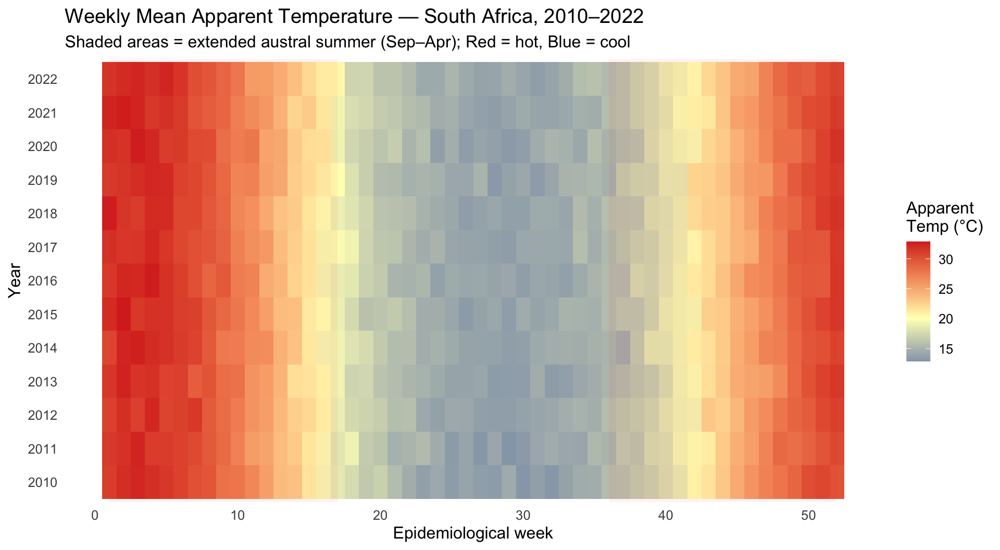
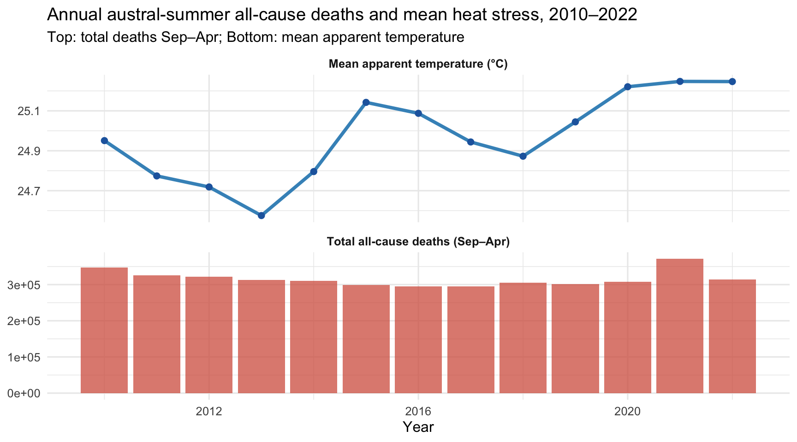
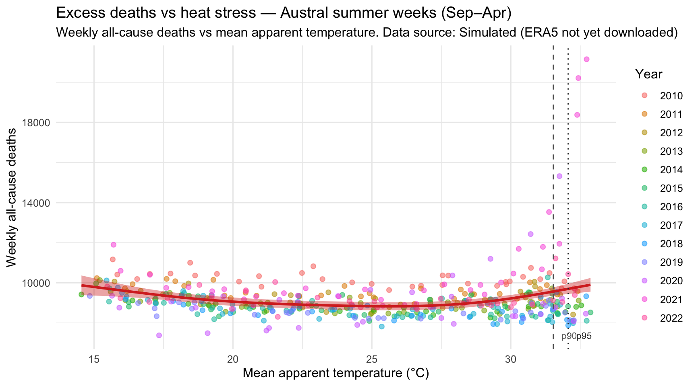
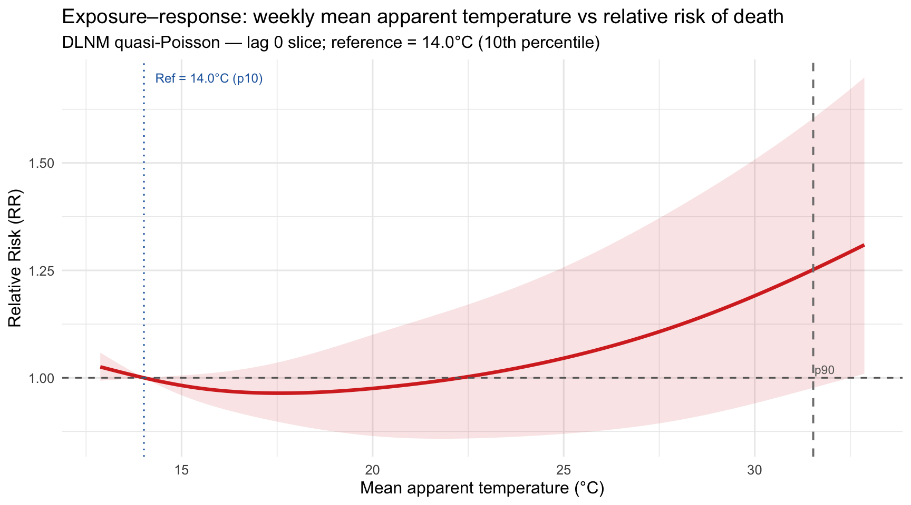

Component | Details |
|---|---|
Heat stress data | Simulated (ERA5 not yet downloaded) |
Mortality data | SA VR data (MRC-processed Deaths2022_MRCversionFINAL.feather) |
Analysis period | 2010–2022 (13 austral summer seasons) |
Temporal resolution | Epidemiological week (ISO weeks 1–52) |
Spatial resolution | National or provincial (if province variable available in VR data) |
Heat Stress and Excess Mortality in South Africa
Linking ERA5-Land heat stress metrics to vital registration mortality data, 2010–2022
heat-health
excess-mortality
climate
ERA5
DLNM
South Africa
Excess all-cause deaths attributable to high heat stress during the extended austral summer (September–April), estimated using ERA5-Land apparent temperature and a Distributed Lag Non-linear Model applied to South African vital registration data.
1 Introduction
High ambient temperatures are a recognised public health hazard. In South Africa — a low–middle income country with high burden of HIV, tuberculosis, cardiovascular disease, and diabetes — the physiological strain of heat stress is compounded by limited access to air conditioning, high outdoor labour exposure, and dense informal settlements with reduced albedo and ventilation.
The recommended analytical approach uses heat stress as the primary metric, rather than discrete heatwave definitions, for two reasons:
- Heat stress explicitly captures the combined effect of temperature and humidity on the human body, which is physiologically more meaningful than dry-bulb temperature alone.
- Continuous metrics support the exposure–response modelling required for attributable fraction estimation.
1.1 Key metrics
| Metric | Symbol | Formula | Notes |
|---|---|---|---|
| Apparent Temperature | AT | \(AT = T + 0.33e - 0.70w - 4.0\) | Steadman (1994); \(e\) = vapour pressure (hPa), \(w\) = wind speed (m/s) |
| Simplified WBGT | WBGT\(_s\) | \(0.567T + 0.393e + 3.94\) | Shaded/indoor; no solar radiation component |
where \(T\) is 2m air temperature (°C), \(e\) is vapour pressure derived from 2m dew-point temperature, and \(w\) is 10m wind speed (default 1.5 m/s when unavailable).
1.2 Extended austral summer window
Following Brian’s recommendations, the analysis focuses on September–April (austral spring through early autumn), which captures the full range of heat stress variability, including the transitional shoulder seasons where heat-mortality interactions can be substantial.
2 Data
2.1 ERA5-Land heat stress data
Heat stress data are derived from the ECMWF ERA5-Land reanalysis product (Muñoz-Sabater et al. 2021), accessible at the Copernicus Climate Data Store. ERA5-Land provides hourly land-surface variables at ~9 km horizontal resolution. Two variables are used:
2m_temperature(t2m): 2m air temperature [K]2m_dewpoint_temperature(d2m): 2m dew-point temperature [K]
Together, t2m and d2m allow derivation of relative humidity, vapour pressure, and hence apparent temperature and simplified WBGT without separate humidity data.
ERA5 Single-Level data (coarser global product; CDS link) is an alternative for broader contextual analyses or multi-country comparisons where ERA5-Land land-only coverage is unnecessary.
2.1.1 Data acquisition workflow
Step 1: python projects/heat_excess_mortality/_download_era5.py
→ Downloads ERA5-Land NetCDF files to data/era5/
→ One file per austral summer season (Sep YYYY – Apr YYYY+1)
Step 2: python projects/heat_excess_mortality/_calc_heat_stress.py
→ Aggregates hourly ERA5 to daily max AT and WBGT per province
→ Aggregates to epi-week level
→ Writes: data/era5/heat_stress_weekly_prov.csv
Step 3: Rscript projects/heat_excess_mortality/heat_wrangling.R
→ Merges heat stress with VR death data
→ Fits DLNM excess mortality model
→ Writes: projects/heat_excess_mortality/heat_results.rda
Note
If ERA5 data have not yet been downloaded, heat_wrangling.R falls back to a climatological simulation based on known South African temperature seasonality patterns. All figures and models below will use the simulated data until real ERA5 data are available. The simulation label is shown in the plot subtitles.
2.2 Vital registration death data
Weekly all-cause deaths are drawn from the South African vital registration file (1997–2022, MRC-processed). The analysis uses 2010–2022, matching the ERA5 availability window. No cause restriction is applied in the primary analysis — all-cause mortality is the recommended outcome for heat attribution studies because heat affects a broad range of underlying conditions.
Season | Weeks | Mean weekly deaths | Median weekly deaths | Max weekly deaths | Mean AT (°C) |
|---|---|---|---|---|---|
Austral summer (Sep–Apr) | 447 | 9,186 | 8,989 | 21,148 | 25.0 |
Austral winter (May–Aug) | 229 | 10,465 | 10,131 | 19,063 | 14.7 |
3 Methods
3.1 Heat stress metric calculation
Vapour pressure (\(e\)) is derived from 2m dew-point temperature (\(T_d\)) using the Magnus formula:
\[e = 6.112 \exp\!\left(\frac{17.67 \, T_d}{T_d + 243.5}\right) \text{ [hPa]}\]
Apparent temperature (AT) then follows Steadman (1994):
\[AT = T + 0.33e - 0.70 w_s - 4.0 \text{ [°C]}\]
where \(w_s = 1.5\) m/s (typical light wind) is assumed when ERA5 10m wind is unavailable. Sub-daily ERA5 values are reduced to daily maxima and then aggregated to weekly maxima and means aligned with ISO epidemiological weeks.
3.2 Excess mortality model — DLNM
The primary analytical model is a Distributed Lag Non-linear Model (DLNM) (Gasparrini 2011), implemented via the dlnm R package. A cross-basis matrix captures both the non-linear exposure–response shape and the delayed (lagged) mortality effect, with:
- Exposure dimension: natural spline (4 df) over the range of weekly mean AT.
- Lag dimension: natural spline (3 df), max lag = 3 weeks (29 days).
- Statistical model: quasi-Poisson GLM to account for overdispersion.
- Confounders: long-term trend (\(B\)-spline of week index, 7 df) and annual seasonality (harmonic terms, \(\sin(2\pi t/52) + \cos(2\pi t/52)\)).
The reference value is set at the 10th percentile of weekly mean AT to represent the heat-specific effect (cold effects are not the focus here). Attributable death estimates are computed for weeks where AT \(\geq\) the 75th percentile of the austral summer distribution.
3.3 Threshold-based excess deaths
As a supplementary descriptive approach, threshold-based excess deaths are computed by comparing observed weekly deaths in hot weeks (AT \(\geq\) p90 of the summer distribution) against the median deaths in the same epidemiological week across non-hot baseline years (2010–2019). This method requires no modelling assumptions and is useful as a non-parametric cross-check.
4 Results
4.1 Seasonal patterns in heat stress
Figure 1 shows the week-by-year apparent temperature for South Africa. A clear summer peak (weeks 1–17 and 36–52, i.e. Jan–Apr and Sep–Dec) is visible, with inter-annual variability in the intensity of hot weeks.
Show code
if (exists("fig_heat_heatmap")) fig_heat_heatmap else message("Run heat_wrangling.R first.")
4.2 Annual austral-summer heat and deaths
Figure 2 shows the total all-cause deaths (bars) and mean summer apparent temperature (line) by year. If a heat–mortality relationship exists, years with higher mean AT should tend to show elevated summer deaths.
Show code
if (exists("fig_annual_summer")) fig_annual_summer else message("Run heat_wrangling.R first.")
4.3 Heat stress vs weekly deaths — Scatter
Figure 3 shows the within-year relationship between weekly mean AT and all-cause death counts during austral summer weeks. The GAM smoother provides a flexible representation of the exposure–response shape.
Show code
if (exists("fig_heat_scatter")) fig_heat_scatter else message("Run heat_wrangling.R first.")
4.4 Exposure–response: DLNM
Figure 4 shows the relative risk (RR) of all-cause death for a given weekly mean AT at lag 0 (same-week effect), derived from the DLNM cross-basis prediction. An RR > 1 above the reference indicates heat-attributable mortality.
Show code
if (exists("dlnm_available") && isTRUE(dlnm_available)) {
if (exists("fig_dlnm_lag0") && !is.null(fig_dlnm_lag0)) {
fig_dlnm_lag0
} else {
message("DLNM result not available — run heat_wrangling.R first.")
}
} else {
message(
"DLNM not available. Install: install.packages('dlnm')\n",
"then re-run heat_wrangling.R."
)
}
4.5 Attributable and threshold-based excess deaths
Year | Hot weeks (n) | Total deaths (hot wks) | Excess deaths vs baseline | Mean excess per week |
|---|---|---|---|---|
2,015 | 4 | 34,863 | 19 | 4.8 |
2,017 | 2 | 16,893 | 0 | 0.0 |
2,018 | 4 | 34,913 | 165 | 41.2 |
2,020 | 5 | 49,871 | 6,229 | 1,245.8 |
2,021 | 4 | 71,680 | 35,577 | 8,894.2 |
2,022 | 5 | 49,770 | 4,624 | 924.8 |
2,010 | 3 | 29,523 | 3,348 | 1,116.0 |
2,011 | 2 | 18,995 | 2,041 | 1,020.5 |
2,012 | 2 | 17,828 | 904 | 452.0 |
2,013 | 2 | 17,938 | 612 | 306.0 |
2,014 | 4 | 34,718 | 724 | 181.0 |
2,016 | 4 | 32,721 | 0 | 0.0 |
2,019 | 4 | 33,484 | 257 | 64.2 |
Year | Hot weeks (n) | Observed deaths | Attributable deaths | Mean RR | Mean AF |
|---|---|---|---|---|---|
2,010 | 12 | 121,094 | 16,878 | 1.162 | 0.139 |
2,011 | 14 | 132,774 | 17,310 | 1.151 | 0.130 |
2,012 | 13 | 120,021 | 16,254 | 1.157 | 0.135 |
2,013 | 13 | 115,818 | 15,811 | 1.158 | 0.136 |
2,014 | 12 | 105,979 | 14,954 | 1.165 | 0.141 |
2,015 | 13 | 114,781 | 16,324 | 1.167 | 0.142 |
2,016 | 13 | 111,812 | 15,545 | 1.163 | 0.139 |
2,017 | 13 | 110,067 | 15,147 | 1.160 | 0.138 |
2,018 | 13 | 111,575 | 15,738 | 1.165 | 0.141 |
2,019 | 13 | 111,391 | 15,827 | 1.166 | 0.142 |
2,020 | 13 | 125,879 | 17,650 | 1.164 | 0.140 |
2,021 | 13 | 168,809 | 25,032 | 1.167 | 0.142 |
2,022 | 14 | 130,443 | 18,006 | 1.160 | 0.137 |
5 Discussion
5.1 Heat–mortality in a South African context
South Africa’s heat–mortality relationship is expected to differ from temperate-country patterns in several ways:
- Acclimatisation: Populations in chronically hot provinces (Limpopo, Northern Cape) may show higher tolerance thresholds than those in cooler coastal cities (Cape Town, Durban). Provincial stratification is recommended once ERA5 provincial data are available.
- Population vulnerability: High HIV/TB burden increases cardiovascular and respiratory fragility, potentially amplifying heat effects. Future analyses could stratify by cause of death (cardiovascular, respiratory, external) or link to prevalence estimates.
- Year-on-year variability: COVID-19 (2020–2022) substantially elevated all-cause mortality. Where possible, the DLNM baseline should be restricted to pre-pandemic years (2010–2019), with post-pandemic years treated as a surveillance/validation period.
5.2 Extended austral summer rationale
The September–April window (following Brian’s recommendation) captures:
- Shoulder-season heat events: October–November “early summer” heat, which may be more dangerous because populations are not yet physiologically acclimatised.
- Late-summer persistence: March–April events, when cumulative heat burden from January–February may have already elevated cardiovascular risk.
- This is consistent with the evidence base for southern Africa (e.g. Tompkins & McCreesh 2016 (Tompkins and McCreesh 2016)).
5.3 Limitations
- Registration delay: VR deaths may be registered weeks after occurrence, attenuating real-time detection; aggregate seasonal estimates are less affected.
- Spatial mismatch: ERA5-Land grid cells are aggregated to province-level means; this ecological aggregation may mask within-province heterogeneity (urban heat islands, informal settlements).
- Simulated data caveat: Until ERA5 data are downloaded, all quantitative results use a climatological simulation. Re-run
heat_wrangling.Rafter downloading real ERA5 data. - No cause-specific analysis in primary model: Disaggregating by ICD-10 chapter (circulatory, respiratory, external) would improve biological specificity but reduces statistical power at weekly resolution.
- CDO multi-year processing: For the full 26-season dataset, CDO (
cdo mergetime,cdo daymax) substantially reduces processing time over pure-xarray loops and is recommended for production runs.
5.4 Next steps
| Priority | Task |
|---|---|
| High | Download ERA5-Land data (_download_era5.py) and recompute with real heat stress |
| High | Add provincial stratification once province column verified in VR data |
| Medium | DLNM by cause of death (cardiovascular, respiratory) |
| Medium | Sensitivity analysis: ERA5 Single-Level vs ERA5-Land |
| Low | Outdoor WBGT with solar radiation (requires ERA5 surface radiation variables) |
| Low | Incorporate population denominators for rate-based analysis |
References
Gasparrini, Antonio. 2011. “Distributed Lag Linear and Non-Linear Models in R: The Package dlnm.” Journal of Statistical Software 43 (8): 1–20. https://doi.org/10.18637/jss.v043.i08.
Muñoz-Sabater, Joaquín, Emanuel Dutra, Anna Agustí-Panareda, et al. 2021. ERA5-Land Hourly Data from 1950 to Present. Copernicus Climate Change Service (C3S) Climate Data Store (CDS). https://doi.org/10.24381/cds.e2161bac.
Tompkins, A. M., and N. McCreesh. 2016. “A Regional-Scale, High Resolution Dynamical Malaria Model That Accounts for Population Density, Seasonal Crop-Land Changes and Passive Transmission.” Malaria Journal 15 (1): 38. https://doi.org/10.1186/s12936-016-1066-x.